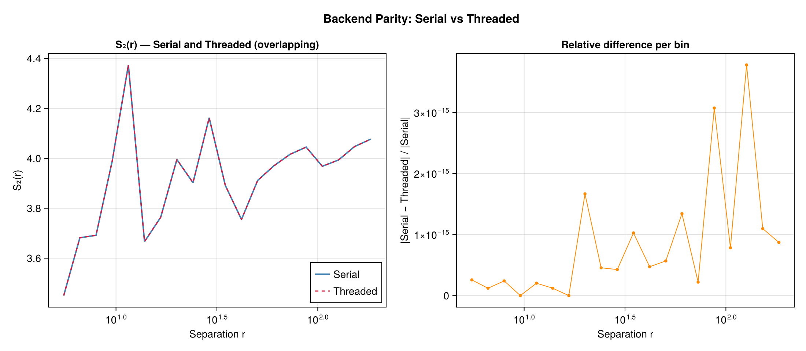
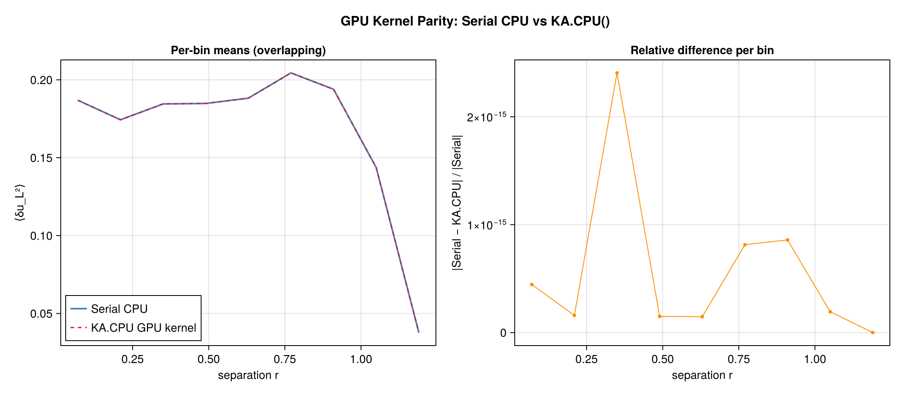
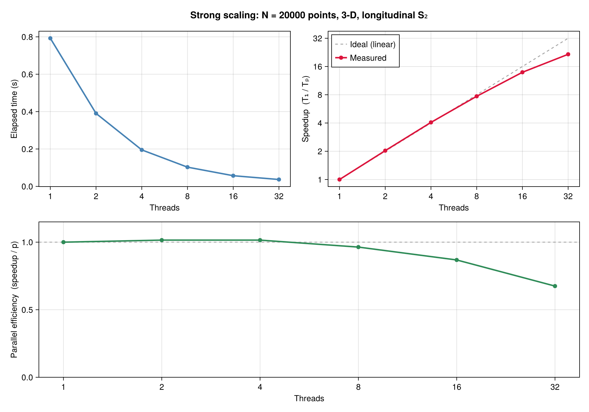
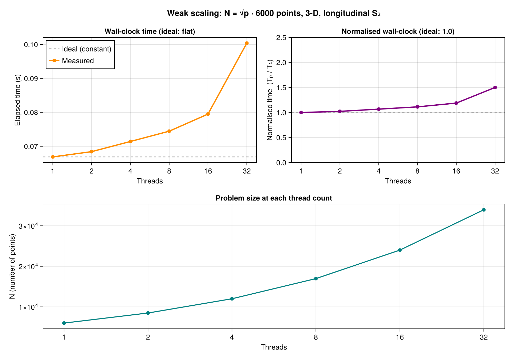

Execution backends and workspaces
Execution backends select hardware and parallel execution. Spectral backends select a numerical method. Both choices must support the requested operator, geometry, and data layout.
Execution choices
| Backend | Required package | Execution |
|---|---|---|
SerialBackend() | Core dependencies | One CPU thread |
ThreadedBackend() | OhMyThreads | Tasks with private partial reductions |
DistributedBackend() | Distributed | Julia worker processes |
MPIBackend() | MPI | MPI ranks |
GPUBackend(device) | KernelAbstractions, device provider | Device kernels |
AutoBackend() | Available extensions | An available execution method |
Import these types from ComputationalBackends. Load CUDA and use GPUBackend(CUDA.CUDABackend()) for CUDA. GPUBackend(KernelAbstractions.CPU()) runs the portable device kernels on the CPU.
Explicit CPU calculation
using Random: Random
using ComputationalBackends: SerialBackend
using StructureFunctions: Calculations as SFC, StructureFunctionTypes as SFT
rng = Random.MersenneTwister(7)
x = Random.rand(rng, 2, 32)
u = Random.randn(rng, 2, 32)
bins = range(0.0, 1.5; length=9)
s = SFC.calculate_structure_function(SFT.L2SFType(), x, u, bins;
backend=SerialBackend())
s.values8-element Vector{Float64}:
1.679325589658975
1.627599242117068
1.634165214623699
1.2716245047358776
1.391997952328319
0.7657923653117025
1.810745158357286
NaNFor threading, start Julia with the allocated thread count, load OhMyThreads, and select ThreadedBackend(). Distributed and MPI workers must use a compatible project and package resolution. Configure the local backend and worker threads within the allocated CPU budget.
Agreement between backends
Every backend sums the same pairs into the same bins. Counts agree exactly; sums agree to the rounding of a different summation order.


Thread scaling
The threaded point kernel on one physical core per thread, for a fixed problem (strong scaling) and for a problem whose pair count grows with the threads (weak scaling). benchmark/benchmark_scaling.jl regenerates both figures; the GPU page has the device's.


Result location
A result computed on a GPU backend stays on the device; to_host(result) copies it to host memory. A device call returns once its work is queued, as a CUDA.jl array operation does; reading the result waits for it. In-place calls on a GPU backend take output buffers on the device and add to them.
Repeated calculations
CPUSFWorkspace and GPUSFWorkspace retain buffers for compatible calculations. Construct a workspace for the calculation's layout, bins, precision, and backend; pass it with workspace=.... A workspace serves one call at a time. On a grid, a TransformWorkspace() keeps the transform's spectra, plans and scratch from one call to the next, as a time series on one grid makes; it takes no arguments and rebuilds what it keeps when a call's sizes change.
Mutating entries add to output buffers; zero them when starting an independent result. A workspace carries no result from one call to the next: allocating entries return fresh buffers. Integer counts must represent both existing counts and the new contributions. Weighted normalization uses floating-point pair mass.
Workspace compatibility and supported families are specified in the calculation reference.
Numerical methods
Direct pairs support general pairwise operators. Culling restricts enumeration using an exact geometric cutoff. Sorted-line polynomial moments and gridded FFT correlations exploit additional structure. Explicit nonuniform and harmonic methods have their own resolution and tolerance parameters.
Use SpectralBackends method tags where the interface accepts them. An FFT requires a compatible provider and a polynomial operator. The non-uniform FFT and harmonic methods bin softly, at the resolution of their mode count or degree.